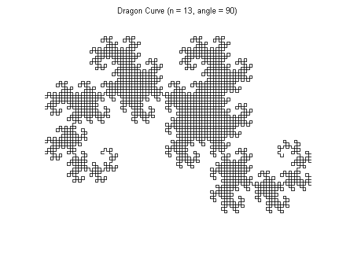

DRAGON CURVE (aka JURASSIC PARK FRACTAL)
The Dragon Curve is a fractal that was made famous in Jurassic Park, a novel by Michael Crichton.
This file calculates and plots the Dragon Curve. The user is encouraged to make their own variations of the fractal by experimenting with the following options:
- Initial starting shape
- Angle of rotation
- Number of fractal iterations
NOTE: In order to prevent users from exceeding the memory capacities of their machines, there is a MAX_LENGTH variable that will limit the number of fractal iterations calculated. On my machine, setting this value greater than 5e6 becomes very taxing for the plot function, but the user is free to change it if they have more memory resources available.
DISCLAIMER: This script can be a bit addicting! So enjoy being creative, but please be careful to keep one eye on the clock! :c)
AUTHOR: Joseph Kirk (c) 5/2006 EMAIL: jdkirk630 at gmail dot com
Contents
DEFINE THE INITIAL SHAPE
The traditional Dragon Curve uses a straight line as the initial shape, but any starting shape will work! Below is a list of some of my favorites:
- x=[0 1]; y=[0 0]; %LINE
- x=linspace(0,2*pi,50); y=-1.5*sin(x); %S-CURVE
- x=[0 1/3 0 1/3 0]; y=[0 1/4 1/2 3/4 1]; %W-CURVE
- t=linspace(0,2*pi/3,20); x=sin(t); y=cos(t); %ARC
% The x and y vectors must have at least two points each (or the result % will just be a single point) and they must have the same length x=[1 0]; y=[0 0]; %LINE
SPECIFY THE ROTATING ANGLE (DEGREES)
The traditional Dragon Curve uses a rotating angle of 90 degrees, but any angle can be specified here. The most interesting fractals seem to be generated using angles between 80 and 120
angle=90; %degrees
SPECIFY THE NUMBER OF DESIRED FRACTAL ITERATIONS
Good choices for this number are generally between 5 and 20, depending on the length of the starting shape and the desired resolution.
n=13;
LIMIT THE SIZE OF THE FRACTAL
This is to prevent users from using too much memory.
MAX_LENGTH=5e6;
GENERATE THE FRACTAL
% Verify that we have valid (x,y) pairs if length(x)~=length(y) disp('ERROR: x and y vectors must have the same length'); return end % Limit the size of the fractal m=length(x); if ((m-1)*2^(n-1)+1) > MAX_LENGTH n=ceil(log2((MAX_LENGTH-1)/(m-1))); disp(['WARNING: maximum iterations exceeded ... setting n = ' num2str(n)]); end % Generate the fractal for k=1:n-1 xr = fliplr(x); yr = fliplr(y); a = x(length(x)); b = y(length(y)); [theta, rho]=cart2pol(xr - a,yr - b); [rx0, ry0] = pol2cart(theta + angle*pi/180, rho); rx = rx0 + a; ry = ry0 + b; x=[x rx(2:length(rx))]; y=[y ry(2:length(rx))]; end
PLOT THE X,Y COORDINATES
figure;plot(x,y,'k'); axis equal axis off title(['Dragon Curve (n = ' num2str(n) ', angle = ' num2str(angle) ')']); set(gcf,'color','white');